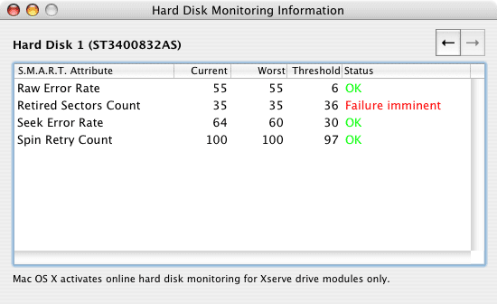

Displaying system information |
The monitor program can display detailed technical information about your computer. Select the menu item Window > Show system info or press ⌘+4. Among the displayed items are:
If your computer is equipped with self-contained micro-processing units (MPUs) - this is the case for the top models of the Power Mac G5 series -, or if you are using an Intel-based Macintosh system, you can open a detail sheet which gives you more information. To open the additional info panel, press the button More Info…. If your computer has a built-in system management database compliant with industry standards, pressing the button Management Info… will open a second detail panel with other types of information (see below).

The detail sheet on computers using MPU cards has the following information available:
If your computer is equipped with multiple MPU cards, each board can be selected by the navigation buttons in the upper right corner.
If your computer uses a processor of the x86 architecture (Intel-based Macintosh systems), pressing the More Info button will give you the following information:
If your computer is equipped with multiple processor packages, each unit can be selected by the navigation buttons in the upper right corner.
The detail sheet on computers containing a system management table has the following information available:
If your computer is equipped with multiple processors, cache units, or memory slots, you can navigate between the different objects by pressing the arrow buttons in the upper left corner of the sheet.
When using the full version of Hardware Monitor you can also get detailed information about the batteries used. Select the menu item Window > Show battery info or press ⌘+5. Hardware Monitor will use different types of display panels depending on whether you are using up-to-date battery units or not. In any case, the following information will be shown:
The following two items are only available for specific battery units and can be displayed only when using certain operating system versions:
On computers equipped with multiple battery slots, data for each unit is available. You can select between different battery units using the navigation buttons in the upper right corner of the window. If your battery unit is compliant with the industry standard for "smart batteries", you can press the button Details… to display additional manufacturing data like vendor, serial number, or production date. The following example shows the battery panel for an older PowerBook battery unit:
In case your battery unit is compliant with the Smart Battery industry standard, and you are using an Intel-based system with Mac OS X 10.4.9 or a later version, Hardware Monitor will use a panel like this to display the battery information:
This panel additionally shows the current temperature of the battery and the individual voltages for each cell if the unit discloses this information. The current charge is displayed by a bar graph, as well as the comparison between the current total capacity and the original capacity, which is characteristic for the health of your battery. It is normal that the battery will wear out with use after time, so the maximum capacity will decrease in relation to the capacity "as designed" when the battery was new.
The battery unit may no longer work correctly if one battery cell shows a voltage very different from the voltages of the remaining cells. This is a good indication that the battery has reached the end of its life and should be replaced.
Depending on your computer and the version of Mac OS X it is running, the operating system might monitor the correct function of all connected hard disks to predict whether a disk drive could fail. This function is based on a feature called S.M.A.R.T.
S.M.A.R.T. is the abbreviation of Self Monitoring, Analysis, and Reporting Technology . It is an industry standard introduced in 1992 to react earlier on hard disk failures. A hard disk supporting the S.M.A.R.T. standard monitors itself with its own micro processor and allows the operating system to request information if technical parameters have changed in such a way that the hard disk might become defective in the near future. In this case the hard disk can be replaced before any data is lost.
S.M.A.R.T. is available for all up-to-date hard disk drives that are connected via an ATA or SATA interface. To display the current status of your drives select the menu item Window > Show Drive Overview or press ⌘+8.
The columns in the table have the following meaning:
The table does not update automatically because continuous monitoring would slow down all drives. If you want to make sure the table is up-to-date, close, then reopen the window.
The S.M.A.R.T. verification status explained in the previous section allows you to check whether the disk drives are OK. The status is based on information acquired by the diagnostic processor of the drive unit's controller. In some cases the detail data on which the verification status is based can be monitored as well. Mac OS X is doing this automatically for Apple Xserve computers.
Select the menu item Window > Show Xserve Disk Info or press ⌘+7. A window like the following will be displayed:

Under normal circumstances, this feature is only available if all of the following conditions are true:
On computers equipped with multiple monitored disk drives, data for each unit is available. You can select between different drives using the navigation buttons in the upper right corner of the window.
The table shows the following information:
There are three possible cases:
This feature is only available in Hardware Monitor, not in Temperature Monitor. The application can try to identify all displays currently connected to the system. Select the menu item Window > Show Display Info, or press ⌘+9. The following data about each display unit should become accessible:
The amount of information provided will vary between different display vendors. This feature will not work with monitors built before 1995. In case you are using a display cable not compliant with VESA standards, or the signal is routed through a switch or similar device, neither Mac OS X nor Hardware Monitor may be capable of identifying the display.
If multiple displays are connected, you can switch between them using the buttons in the upper right corner. When connecting or disconnecting cables for external monitors, you should close and reopen the information window to ensure you are getting up-to-date information. An example is shown in the following picture:
Display units built into mobile Apple computers usually identify themselves as "Color LCDs" built by 'APP' (Apple Inc.). However, in most cases, the true part number of the original manufacturer is disclosed in the line Additional Info. If you search for this part number on the Internet, you will be able to identify the true vendor of the display unit. In the example above, it would be LTN154BT, a display panel manufactured by SAMSUNG.